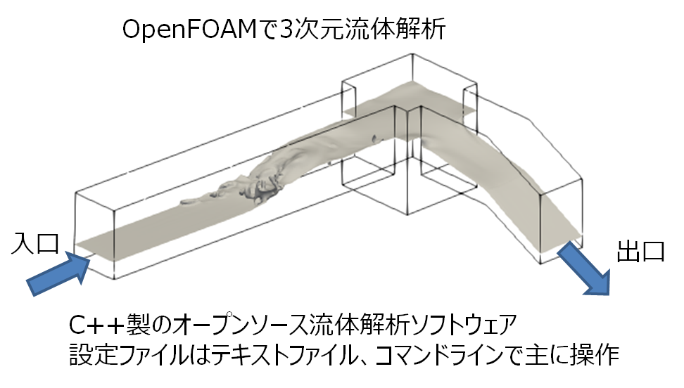
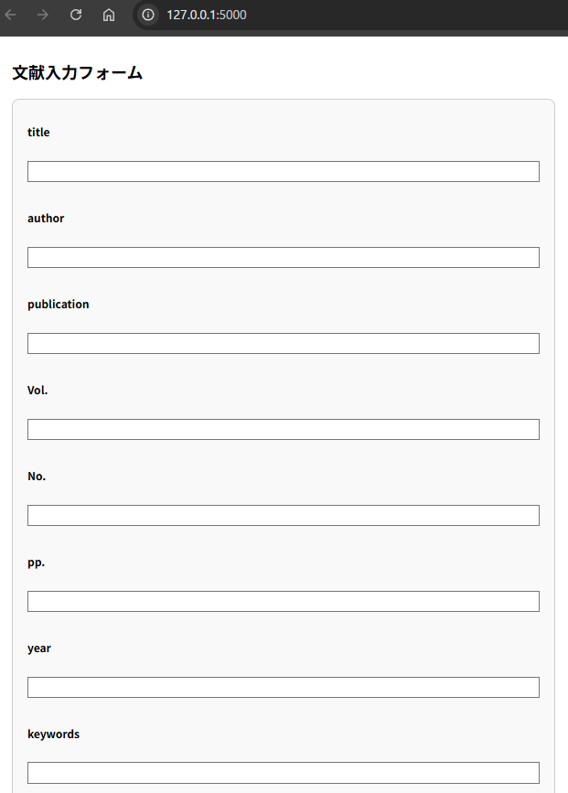
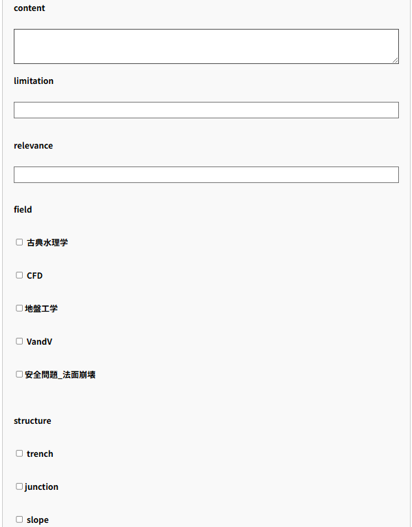
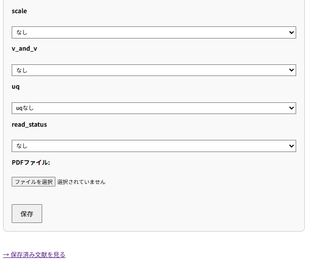
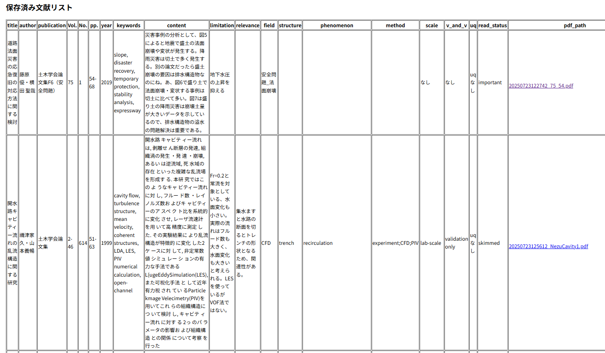

1. 自己紹介
- 氏名：さんのみや
- 仕事：道路排水の問題を3次元流体の技術で解決したい人
- 先日、社会人選抜の博士課程の試験に申し込んだ
- Webアプリ（WebGIS）もやっている。
- 今日の話は、*Flaskで論文レビュー支援アプリを作ってみた話*

図1: たとえばこんな感じの流れをコンピュータで計算して可視化。
2. どんなものを作ったのか

図2: 論文レビュー支援アプリの画面（タイトルとか著者名など）

図3: 論文レビュー支援アプリの画面（テキストボックスとかラジオボタン）

図4: 論文レビュー支援アプリの画面（ドロップダウンとかファイルアップロード）

図5: 文献リスト（見づらいっすねえ）
3. 動機：なぜ作ろうと思ったか？
- 研究の新規性を説明するには既往研究の整理が重要
- 問題として、論文の検索の問題
- インターネットで論文ダウンロード、後日読もうとするが、ファイル名から論文の内容を予測できない。
- 論文1本ずつ読んでメモするためには、メモとPDFを紐付ける仕組みが必要
- 最近Webアプリ作っているのもあり、Webフォームで記録 → CSVとPDFを一元管理したい！
4. 他の選択肢も考えた
- Mendeleyはサービス修了、zoteroよさそう
- Excelでもできそうな気がする（ドロップダウンリスト＋VBAなど駆使すれば）
- Google FormやMicrosoft Formでもできそう
- 自分で自由に項目を変えたい、自作できるなら自作したい、ただし効率よく
5. 解決策の概要
- 論文の属性情報を手入力で記録
- ブラウザから入力して、CSV形式で保存（データベースは使わない）
- PDFファイルをFlaskアプリの任意のディレクトリ内に保存
6. フォルダ構成
├── app.py #本体
├── data.csv #論文PDFファイルの属性情報
├── static
│ └── uploads #論文PDFの保存場所
│ ├── 20250723122742_75_54.pdf
│ ├── 20250723125612_NezuCavity1.pdf
│ ├── 20250723131250_Fujita_ichiro_trensh_suiritokusei03.pdf
│ └── 20250723132043_Fujita_ichiro_kaidan_trench.pdf
└── templates #Flaskのrender_template()で参照するフォルダ
├── form.html #入力フォームのためのテンプレート
└── list.html #data.csvをHTMLで描画するためのテンプレート
7. ソースコード（app.py）
from flask import Flask, render_template, request, redirect, send_from_directory import os import csv import time from werkzeug.utils import secure_filename app = Flask(__name__) UPLOAD_FOLDER = 'static/uploads' CSV_FILE = 'data.csv' app.config['UPLOAD_FOLDER'] = UPLOAD_FOLDER FIELDS = [ "title", "author", "publication", "Vol.","No.","pp." , "year", "keywords", "content","limitation","relevance","field", "structure", "phenomenon","method", "scale", "v_and_v", "uq","read_status", "pdf_path" ] # ディレクトリがなければ作成 os.makedirs(UPLOAD_FOLDER, exist_ok=True) @app.route('/') def index(): return render_template('form.html', fields=FIELDS[:-1]) # pdf_pathは除外 @app.route('/submit', methods=['POST']) def submit(): # フォーム入力の取得 row = [] for field in FIELDS[:-1]: if field in ['method', 'phenomenon', 'field']: # ← 複数選択対応した項目 values = request.form.getlist(field) # 複数の値を受け取る row.append(';'.join(values)) # セミコロン区切りでCSVに入れる else: row.append(request.form.get(field, '')) # 単一の値を受け取る # PDFアップロード処理 file = request.files.get('pdf') if file and file.filename != '': timestamp = time.strftime("%Y%m%d%H%M%S") filename = f"{timestamp}_{secure_filename(file.filename)}" #filename = secure_filename(file.filename) file_path = os.path.join(app.config['UPLOAD_FOLDER'], filename) file.save(file_path) row.append(file_path) else: row.append('') # PDFなし # CSVへ追記 with open(CSV_FILE, 'a', newline='', encoding='utf-8') as f: writer = csv.writer(f) writer.writerow(row) return redirect('/list') @app.route('/list') def list_entries(): entries = [] if os.path.exists(CSV_FILE): with open(CSV_FILE, newline='', encoding='utf-8') as f: reader = csv.reader(f) for row in reader: entries.append(dict(zip(FIELDS, row))) return render_template('list.html', entries=entries) @app.route('/uploads/<filename>') def uploaded_file(filename): return send_from_directory(app.config['UPLOAD_FOLDER'], filename) if __name__ == '__main__': app.run(debug=True)
8. フォーム部分（form.html）
<!DOCTYPE html> <html> <head><meta charset="utf-8"><title>文献入力</title></head> <body> <h2>文献入力フォーム</h2> <form method="post" action="/submit" enctype="multipart/form-data"> {% for field in fields %} <label>{{ field }}</label><br> {% if field == 'content' %} <textarea name="content"></textarea> {% elif field in ['field', 'structure', 'phenomenon', 'method', 'scale', 'v_and_v', 'uq' , 'read_status'] %} {% if field == 'field' %} <label><input type="checkbox" name="field" value="古典水理学"> 古典水理学</label><br> <label><input type="checkbox" name="field" value="CFD"> CFD</label><br> <label><input type="checkbox" name="field" value="地盤工学">地盤工学 </label><br> <label><input type="checkbox" name="field" value="V&V"> VandV</label><br> <label><input type="checkbox" name="field" value="安全問題_法面崩壊">安全問題_法面崩壊 </label><br> {% elif field == 'structure' %} <label><input type="checkbox" name="structure" value="trench"> trench</label><br> <label><input type="checkbox" name="structure" value="junction">junction </label><br> <label><input type="checkbox" name="structure" value="slope"> slope</label><br> {% elif field == 'phenomenon' %} <label><input type="checkbox" name="phenomenon" value="hydraulic_jump"> hydraulic_jump</label><br> <label><input type="checkbox" name="phenomenon" value="recirculation"> recirculation</label><br> <label><input type="checkbox" name="phenomenon" value="rapid varied flow"> rapid varied flow</label><br> {% elif field == 'method' %} <label><input type="checkbox" name="method" value="experiment"> experiment</label><br> <label><input type="checkbox" name="method" value="CFD"> CFD</label><br> <label><input type="checkbox" name="method" value="VOF"> VOF</label><br> <label><input type="checkbox" name="method" value="MPS"> MPS</label><br> <label><input type="checkbox" name="method" value="PIV"> PIV</label><br> {% elif field == 'scale' %} <select name="scale"> <option value="なし">なし</option> <option value="lab-scale">lab-scale</option> <option value="prototype">prototype</option> <option value="computational">computational</option> <select> {% elif field == 'v_and_v' %} <select name="v_and_v"> <option value="なし">なし</option> <option value="verification only">verification only</option> <option value="validation only">validation only</option> <option value="VVあり">VandVあり</option> {% elif field == 'uq' %} <select name="uq"> <option value="uqなし">uqなし</option> <option value="uqあり">uqあり</option> {% elif field == 'read_status' %} <select name="read_status"> <option value="なし">なし</option> <option value="read">read</option> <option value="unread">unread</option> <option value="skimmed">skimmed</option> <option value="important">important</option> {% endif %} </select> {% else %} <input type="text" name="{{ field }}" size="80"><br> {% endif %} <br> {% endfor %} <label>PDFファイル:</label><br> <input type="file" name="pdf"><br><br> <input type="submit" value="保存"> </form> <br><a href="/list">→ 保存済み文献を見る</a> </body> <script> // フォーム内で Enter キーを押したときに送信されないようにする document.addEventListener("DOMContentLoaded", function () { const form = document.querySelector("form"); form.addEventListener("keydown", function (event) { if (event.key === "Enter" && event.target.tagName !== "TEXTAREA") { event.preventDefault(); // Enter キーによる送信を防止 } }); }); </script> </head> </html>
9. フォーム側の工夫（form.html）
- field, phenomenon, methodなどはラジオボタンで複数選択可能に
- 送信前に Enter キーで誤送信しないよう JSで防止
10. 保存したCSVをHTML表にするlist.html
<!DOCTYPE html> <html> <head><meta charset="utf-8"><title>文献一覧</title></head> <body> <h2>保存済み文献リスト</h2> <table border="1"> <tr> {% for key in entries[0].keys() %} <th>{{ key }}</th> {% endfor %} </tr> {% for entry in entries %} <tr> {% for key, value in entry.items() %} <td> {% if key == 'pdf_path' and value %} <a href="{{ '/' + value }}">{{ value.split('/')[-1] }}</a> {% else %} {{ value }} {% endif %} </td> {% endfor %} </tr> {% endfor %} </table> <br><a href="/">← フォームに戻る</a> </body> </html>
11. list.html のレンダリング
- CSVを読み込んでHTMLテーブル化
- PDFパスがあればリンクに変換
- 見づらさは今後の課題（CSSでなんとかする）
12. 技術的な勘所・感想
- Flaskのテンプレート機能で動的に入力フォームのHTMLを作成
- フォームの複数選択 → form.getlist() で対応
- secure_filename()はディレクトリトラバースを防ぐうえで重要なFlaskの機能
13. まとめ
- 論文レビューを支援する個人用アプリを作成した
- 入力項目が多いとやる気を失い、使わなくなる印象
- 使いやすさは、今後改善する予定
- ExcelやGoogle Formにはない自由度を実現
- Flask × HTML × CSV で気軽に作れる